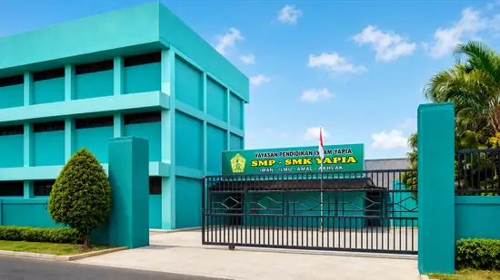
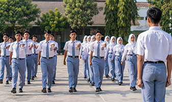
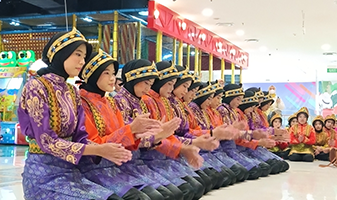
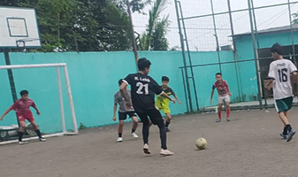

Membentuk Generasi Berakhlak Mulia, Cerdas, dan Terampil
Pendidikan terintegrasi berbasis nilai-nilai keislaman, pengembangan karakter, serta kesiapan teknologi dari jenjang MI/SDI, SMP, hingga SMK.

Komitmen Kami dalam Mengembangkan Potensi Anak Didik
Sekolah YAPIA hadir sebagai lembaga pendidikan terpadu di Tangerang Selatan yang berfokus menyelaraskan pengajaran akademis formal dengan pembinaan moral spiritual.
Pendidikan Karakter
Membiasakan nilai-nilai islami, adab sopan santun, kemandirian, dan kedisiplinan sejak dini melalui pembiasaan harian yang terarah.
Pengajar Kompeten
Didukung oleh jajaran guru dan tenaga pendidik berpengalaman yang memiliki dedikasi tulus dalam membimbing perkembangan siswa secara humanis.
Kesiapan Digital
Memadukan teknologi informasi dalam aktivitas pembelajaran harian guna mempersiapkan lulusan yang cakap teknologi dan berdaya saing.
Pendidikan Terpadu dari Dasar hingga Kejuruan
YAPIA mengelola tiga pilar jenjang pendidikan formal yang saling bersinergi guna memastikan kelanjutan proses belajar anak berjalan optimal.
Madrasah Ibtidaiyah / Sekolah Dasar Islam (MI / SDI)
Meletakkan dasar keimanan, akhlak mulia, dan kecakapan literasi dasar bagi putra-putri Anda. Fokus utama kurikulum diarahkan pada pengembangan motorik, baca tulis Al-Qur'an, dasar numerasi, serta penanaman sopan santun.
- Pembiasaan salat dhuha dan tadarus bersama
- Metode pembelajaran interaktif dan bersahabat
- Pengenalan dasar komputer sejak kelas rendah

Sekolah Menengah Pertama (SMP) YAPIA
Masa peralihan remaja dibimbing secara bijak melalui penguatan nalar kritis, kemampuan bersosialisasi yang sehat, serta penguatan kompetensi sains dan keagamaan. Mempersiapkan siswa siap bersaing di tingkat sekolah menengah atas.
- Pengayaan sains praktis dan matematika kontekstual
- Pembelajaran kepemimpinan lewat organisasi OSIS
- Program bimbingan konseling dan pemetaan minat bakat

Sekolah Menengah Kejuruan (SMK) YAPIA
Mempersiapkan siswa didik yang siap kerja, berkarakter mandiri, dan tangguh. Memadukan kurikulum nasional kejuruan dengan praktek industri nyata, pembekalan sertifikasi profesi, dan penanaman jiwa wirausaha berakhlak.
- Fokus keahlian sesuai dengan kebutuhan pasar kerja terkini
- Kemitraan luas untuk program Praktik Kerja Lapangan (PKL)
- Sertifikasi uji kompetensi dan pembinaan karier alumni

Lingkungan Belajar yang Aman, Sehat, dan Kondusif
Sekolah YAPIA menyediakan fasilitas fisik yang memadai guna menunjang tumbuh kembang kemampuan akademis dan kebugaran motorik siswa.
Laboratorium Komputer
Dilengkapi komputer berspesifikasi mutakhir untuk melatih kecakapan informatika, pemrogaman dasar, simulasi ujian, dan literasi digital sejak dini.
Lapangan Basket
Area olahraga yang representatif untuk melatih teknik, melangsungkan latihan rutin, serta menjaga kesehatan kardio anak didik.
Lapangan Futsal
Tempat favorit siswa dalam melatih koordinasi motorik, kerja sama tim, sportivitas, serta mengasah keterampilan teknik bermain bola.
Lapangan Voli
Fasilitas lapangan terbuka yang fleksibel, dimanfaatkan untuk pembelajaran olahraga sekolah, senam, dan turnamen olahraga antar-kelas.
Wadah Pengembangan Bakat, Minat, dan Kepemimpinan
Kegiatan di luar kelas diorganisasikan secara dinamis untuk melatih kerja sama, ketangguhan mental, dan melestarikan kekayaan budaya.

Paskibra (Pasukan Pengibar Bendera)
Membentuk karakter disiplin tinggi, ketahanan fisik, fokus konsentrasi, tanggung jawab, dan memupuk rasa nasionalisme yang mendalam.

Seni Tari Kebudayaan
Mengajak siswa melestarikan warisan tradisi leluhur melalui gerak tari Nusantara yang anggun, dinamis, sekaligus melatih koordinasi tubuh.

Klub Olahraga Terjadwal
Pembinaan terfokus untuk cabang bola voli, futsal, dan basket guna mempersiapkan bakat siswa berkompetisi sehat di tingkat regional.
Mengapa Memercayakan Pendidikan Putra-Putri Anda di YAPIA?
Pendidikan anak adalah keputusan terpenting keluarga Anda. Kami berdedikasi menjaga amanah tersebut dengan integritas tanpa kompromi.
Kurikulum Berkelanjutan
Pendekatan belajar terstruktur dari MI hingga SMK yang menjamin kestabilan proses adaptasi belajar anak tanpa distorsi lingkungan.
Pembiasaan Islami Terbimbing
Tidak sekadar teori, siswa diajak langsung mengamalkan nilai-nilai akhlakul karimah dalam pergaulan sehari-hari di area sekolah.
Lokasi Strategis & Aman
Berdiri di kawasan strategis Pondok Aren yang mudah diakses transportasi umum, namun memiliki tingkat keamanan yang terpantau ketat.
Informasi yang Sering Ditanyakan Mengenai YAPIA
Kami menghargai transparansi. Berikut adalah rangkuman jawaban praktis untuk membantu proses adaptasi calon wali murid.
Sekolah YAPIA menerapkan kurikulum nasional yang diselaraskan dengan program pembiasaan keagamaan khas madrasah/sekolah Islam terpadu, seperti tadarus pagi, bimbingan hafalan surah-surah pendek, hafalan doa harian, serta penerapan konsep adab-adab Islami dalam seluruh mata pelajaran.
Ya. Kurikulum kejuruan di SMK YAPIA disesuaikan dengan perkembangan teknologi dan kualifikasi dunia usaha/industri. Kami membekali siswa dengan praktek laboratorium intensif, kunjungan industri, program magang (PKL) terpandu, serta bimbingan karir pasca-lulus.
YAPIA menempatkan keamanan siswa sebagai prioritas utama. Area sekolah diproteksi oleh petugas keamanan (security) gerbang utama, pengawasan perizinan keluar-masuk tamu yang ketat, serta pemantauan intensif oleh guru piket saat jam istirahat dan kepulangan.
Penerimaan Peserta Didik Baru (PPDB) Sekolah YAPIA dibuka secara berkala mulai pertengahan tahun ajaran baru. Formulir pendaftaran dan informasi detail kuota kelas dapat diakses langsung dengan mengunjungi sekretariat pendaftaran di kampus YAPIA.
Mari Bergabung Bersama Keluarga Besar YAPIA
Persiapkan masa depan putra-putri Anda bersama kami. Hubungi narahubung PPDB atau datang langsung ke sekretariat pendaftaran untuk berkonsultasi mengenai program kelas, biaya, dan survei fasilitas sekolah.
Kontak Sekretariat
- 📍 Alamat: Jl. KH. Wahid Hasyim No.18, Jurang Manggu Timur, Kec. Pondok Aren, Kota Tangerang Selatan, Banten 15222
- 📞 Telepon: (021) 735-1234 (Jam Kerja)
- ✉️ Email: info@yapia.sch.id
- ⏰ Jam Pelayanan: Senin - Sabtu (08.00 - 14.00 WIB)
Kunjungi Kampus Sekolah YAPIA
Kami sangat menyambut kunjungan silaturahmi dari para calon wali murid untuk melihat langsung lingkungan belajar kami.
Panduan Menuju Lokasi
Kampus YAPIA bertempat di kawasan yang mudah dicari di Jurang Mangu Timur, Pondok Aren. Lokasi kami sangat dekat dengan akses utama menuju pusat perekonomian Bintaro, batas wilayah Jakarta Selatan, serta area tol lingkar luar Jakarta.
Dapat dicapai menggunakan trayek angkot lokal dari arah stasiun kereta terdekat (Stasiun Pondok Ranji atau Stasiun Jurang Mangu).
Gunakan rute utama Jl. Ceger Raya lalu belok menuju arah Jl. KH. Wahid Hasyim. Posisi gedung sekolah terlihat jelas dari sisi jalan raya.